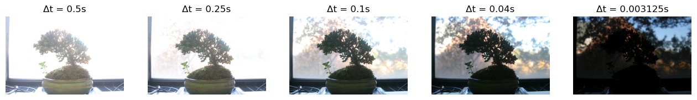
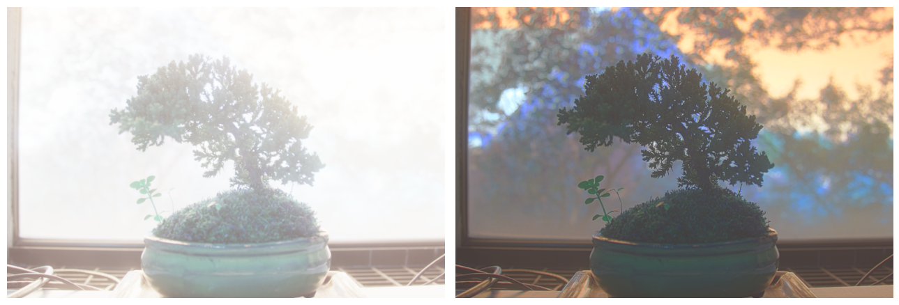
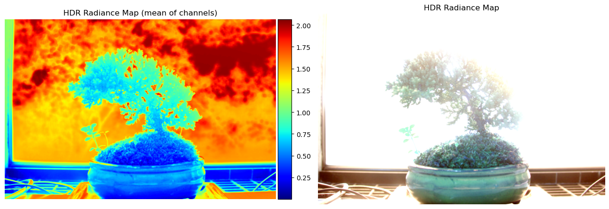
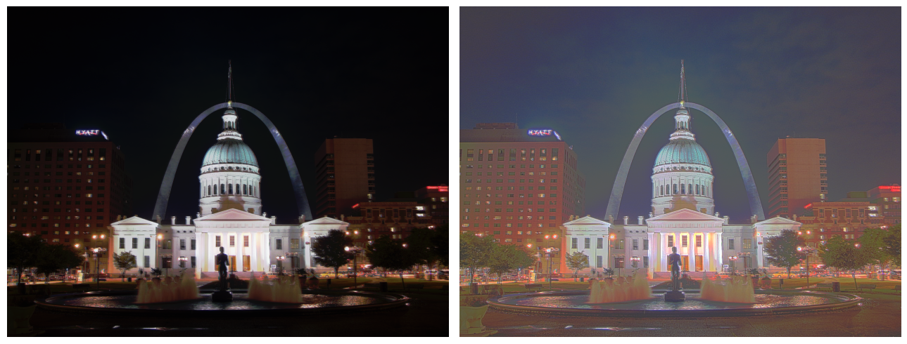
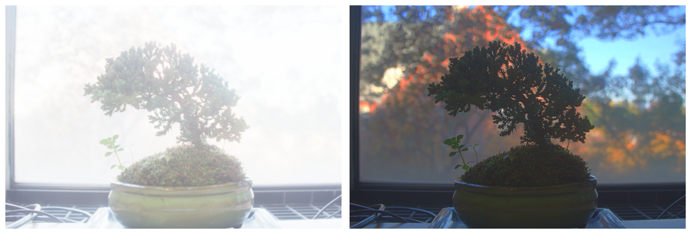
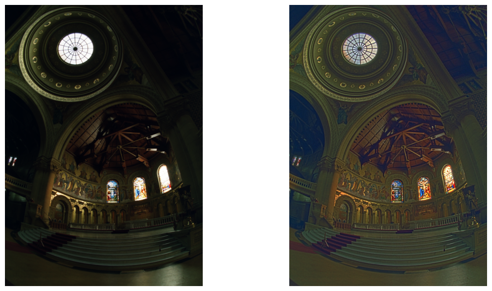
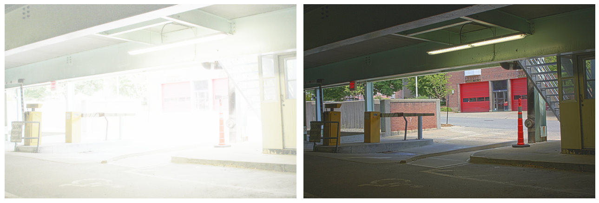
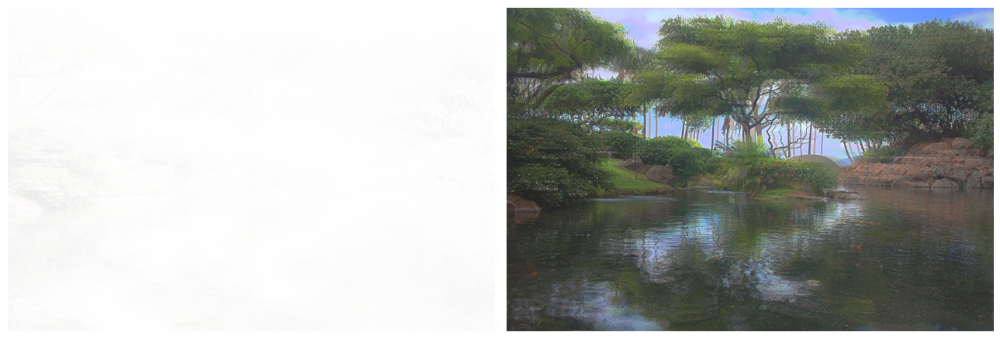
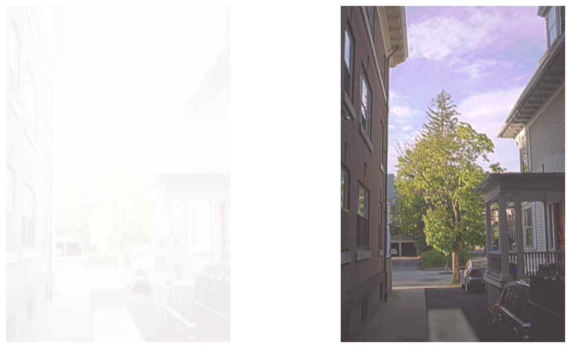
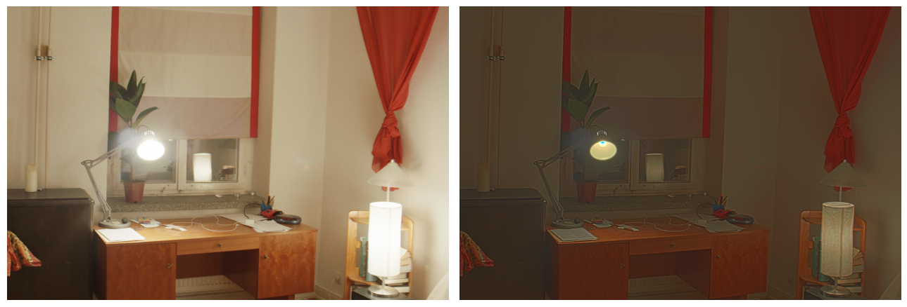

The real world is in high dynamic range (HDR), which cannot be fully captured by modern cameras. However, we can combine information from multiple exposures of the same scene into a single high dynamic range radiance map, then use tone mapping to nicely display this map.
Disclosure: I use starter code from Brown's CS 1290 GitHub classroom.
Here is an example sequence of base images taken at different exposures, depicting a bonsai tree.
First, we need to build a HDR radiance map from several LDR exposures. Based on the logic in Sections 2.1 and 2.2 in Debevec and Malik 1997
, I wrote a function to solve for\( g = \ln(f^{-1}) \)
, which maps pixel values (0 to 255) to the log of exposure values. This involves solving the least-squares algorithm to estimate g and unknown log radiance values for each pixel.Setting λ=50 (smoothing) gives us these results for the bonsai images:
Now that we have estimated g, Equation 6 in Debevec outlines how to weight the contribution of each pixel:
$$\ln E_i = \frac{\sum_{j=1}^P w(Z_{ij}) \left(g(Z_{ij}) - \ln \Delta t_j \right)}{\sum_{j=1}^P w(Z_{ij})} $$
The estimated radiance map for the bonsai tree is shown below.
Let's get this radiance map to a nice visual image by using tone mapping. First, I tried a very simple global tone mapping. This entailed applying a pixel-wise transform:
$$E'_i = \frac{E_i}{1 + E_i}$$
then applying global scaling by subtracting the minimum value and rescaling the resulting values to lie within [0,1].
For a more precise local tone mapping, I implemented a simplified version of Durand 2002. In short, this method first computes global intensity by averaging intensity across all color channels, and scales colors by this intensity value. The log intensity is bilaterally filtered to get base and detail layers.
Here are results for the given arch, bonsai, chapel, garage, garden, house, mug, and window images. Global simple mapping is shown on the left, while Durand mapping is displayed on the right. For Durand, a gamma value of 0.7 worked best for most images (I used 0.5 for the arch and house).
      In this project, I implemented and deployed diffusion models for image generation.
In the notebook, we instantiate DeepFloyd's stage_1 and stage_2 objects used for generation, as well as several text prompts for sample generation.
For the 3 text prompts that we provide, display the caption and the output of the model. Reflect on the quality of the outputs and their relationships to the text prompts. Make sure to try at least 2 different num_inference_steps values. Report the random seed that you're using here. You should use the same seed all subsequent parts.